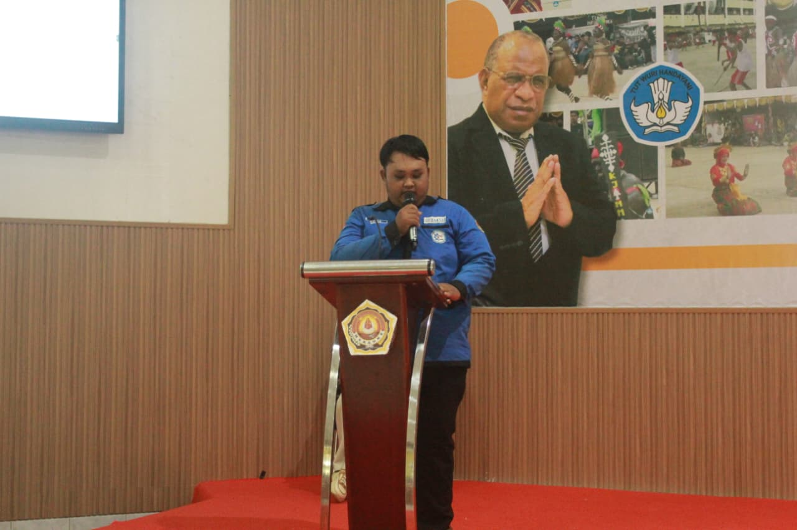

Halo, Saya Irvanda Anggun Satria
Back-end Developer | Mengkhususkan diri dalam membangun aplikasi sisi server yang kuat dan skalabel.
Hubungi SayaBack-end Developer | Mengkhususkan diri dalam membangun aplikasi sisi server yang kuat dan skalabel.
Hubungi SayaSaya adalah mahasiswa Sistem Informasi di Universitas Musamus Merauke. Saya memiliki minat kuat pada pengembangan back-end dan manajemen basis data.
Keahlian saya mencakup PHP, Node.js, dan MySQL. Saya senang memecahkan masalah kompleks dan bekerja dalam tim untuk mewujudkan ide menjadi produk nyata.

2025
2023 - 2025
PHP / Laravel
Advanced (85%)MySQL / SQL
Advanced (90%)Node.js (Express)
Intermediate (65%)API Design (REST)
Intermediate (70%)Telepon: +62 812-1077-3469
Email: irvandaanggunsatria75@gmail.com
Lokasi: Merauke, Indonesia